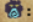
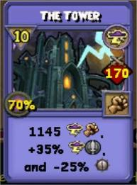
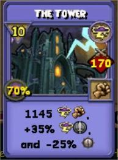

Table of Contents
- Where to Pick Up the Darkmoor Storyline
- Gear
- Where to get the Gear
- New Darkmoor World Spells
- Revamped/New Shadow Spells
- School-Specific Shadow Fusions
- Where to Acquire Shadow Spells
- Miscellaneous Spell Changes
- Cheating Bosses/Enemies
- Secret Boss! The Headless Horseman
- New Global Cheats
Where to Pick Up the Darkmoor Storyline
To begin the Darkmoor storyline, you MUST have completed Selenopolis. If you have done so, you should receive a notification to talk to Fitzhume in the Arcanum.


Gear
This gear (and some upgraded gems and pins) can be acquired by fighting various bosses throughout the world of Darkmoor or crafted from Cezar, who is right in Outsider's Camp, the entrance to Darkmoor. Abomination gear offers more offensive stats, while Monster Hide gear offers more defensive stats, while trading its crit for shadow rating, which Abomination gear does not offer. For ALL schools in general PVE, I would recommend going for the Hat, Boots, Athame, Ring, and Deck of your school for some minor stat increases. For the athame, if you have one of similar stats with a triangle socket instead of a square, you can optionally keep it and add a shadow rating jewel in that slot, trading health for shadow rating, if you please. If you do not already have level 170 gear, you can consider getting the entire Abomination set of your school, as the gear is still close to optimal.
Where to get the Gear
The bosses' names are Hierophant of Destruction, Grey Man Golem, Balaur, and Sister Sanderson in top to bottom order on the chart below. To unlock Sister Sanderson's sigil, you must complete her sidequest, which you can pick up from her. She is directly next to her sigil. The monster icon on the right indicates how many times you must defeat the boss to unlock the badge that allows crafting gearpieces that the boss drops.

New Darkmoor World Spells

Check out these new spells! These are the spells at max spellement tier. Check out their animations here:  . Thanks cheervalx! These spells come from a spellquest in Darkmoor. You will get a notification on the right side of your screen when it is available.
. Thanks cheervalx! These spells come from a spellquest in Darkmoor. You will get a notification on the right side of your screen when it is available.
Revamped/New Shadow Spells
The shadow spells have been revamped. Existing ones have been changed and new ones have been added. This icon:  symbolizes the shadow pact system. After using a shadow spell, a shadow pact will be formed. The pact now starts out at 15% max health damage. The shadow pact will consume 1 of whatever follows the shadow pact icon per round to reduce the max health damage by 5%. After 3 rounds, you will take % max health damage of 15% - 5% per consume. Check out the shadow spell animations here: . Thanks Almond!
School-Specific Shadow Fusions
The spells preserve their old spell animations for both fused and unfused versions.
Storm
Storm uses dark shrike to create fused shadow-enhanced spells. These spells are in path a, base tier.
 

Fire
Fire uses dark fiend to create fused shadow-enhanced spells. These spells are in path a, base tier.
Ice
Ice uses dark sentinel to create fused shadow-enhanced spells. These spells are in path a, base tier.

Balance
Balance uses dark trickster to create fused shadow-enhanced spells. These spells are in path a, base tier.

Myth
Myth uses dark nova to create fused shadow-enhanced spells. These spells are in path a, base tier.
Death
Death uses dark dark shepherd to create fused shadow-enhanced spells. These spells are in path a, base tier.
Life
Life uses dark seraph to create fused shadow-enhanced spells. These spells are in path a, base tier.
Where to Acquire Shadow Spells
You can get the shadow transformations from Sofia Darkside in Eclipse Tower in Khrysalis, Moon Cliffs (left image). NOTE: There is a portal from the Arcanum Shadow School room to the Eclipse Tower. You can get the dark shadow attacks from Elana Darksun in the Solar Arc in Khrysalis, Khonda Desert (right image). If you have access to the Arcanum, you can get all of these spells from Velma, the Shadow school trainer there. You can train shadow fusion spells from the shadow creature of your school in the Eclipse Tower. You may first have to complete the new shadow tutorial given by Sofia Darkside to begin training the spells. If you are not level 100 or higher, you will be able to later access these spells naturally through the story questline. NOTE: You are supposed to receive 1 shadow transformation and 1 shadow attack of your school for free, but sometimes the game glitches and will give you the wrong school's shadow spell(s). You will still be able to train the appropriate spell(s) for training point(s).


Miscellaneous Spell Changes
Many existing spells have been changed or have a new spellement path. To see all of the changes, I recommend checking out this video by Almond: . There are two new spells for fire that may add new exciting ways to deal single-target damage in pve!


The new Krampus path b detonates a damage over time for an additional 180% damage! The new A-Baaahh-Calypse detonates 2 damage over times for an additional 145% damage as well! This is a huge damage multiplier, and transforms strong damage over times into quick, instant damage (handy for pve). Pair this with a high damage-per-pip ratio spell like the Ammut's Fury fusion spell that would ordinarily need 5 turns for its full effect, and you have a strong recipe for damage.
Cheating Bosses/Enemies
Many of the bosses in Darkmoor cheat. Luckily for us, Almond has prepared some wonderful slides listing (almost) all of the cheating bosses, describing their cheats and potential strategies to deal with them. You can check that out here: . TIP: If you don't know, there's a helpful shortcut by holding down Ctrl and F together on the keyboard, then releasing. It opens a search bar that allows you to search the page for keywords, like boss names!
Lord Barghest

Lord Barghest is the final boss of the Overgrown Estate dungeon in the Howling Wilds. He can be difficult to fight if you don't have a solid strategy. He will put on massive damager over times that he will incendiate to instantly defeat your entire team if you do not avoid his cheats or fail to kill him in a few rounds. I recommend doing the dungeon with multiple people. One strategy is to make sure supporting wizards have at least one feint, one purge, one enfeeble, and two blades (that stack) among them. The hitter should bring attenuate, a damage aura, and a strong single target hit, like Scion of Storm. The aim here is to buff the hitter up and kill Lord Barghest as soon as possible, which, with this strategy, may be done in anywhere from 3-5 rounds. From there, you can have some wizards flee and return with attack-all-enemy spells to finish off the rest of the enemies.
Heretical Academy Dungeon

The Heretical Academy dungeon is the final dungeon of Darkmoor, located in the Scholomance. There are two bosses of note: Entrance Exam and Balaur.
Entrance Exam

The Entrance Exam will do one of two things on the first round. It will either add shields to itself or add heal over times to itself. You will need player(s) with heal over time and shield removal to remove these things the round before killing the boss, or it will respawn. The boss will remove 20% of all wizards' max health every time a blade or trap is casted. Damage boosting positive auras on yourself or negative auras on the enemy are fine to use. There are two strategies to defeat this boss. One strategy is to remove the heal over times or shields and pepper the boss with aura-buffed hits. The other strategy is to use 2-3 feints on the boss that stack followed with a high-damage single target attack from a hitter to one shot the boss after removing its hanging effects.
Balaur

Balaur has a changing cheat cycle based on the heads present in the battle. Only one head can be targeted for attacks at a time. The common strategy among players is to have 2 hitters and 2 supporters. The supporters will cast two feints on the designated head that stack. The supporters will repeat this process on each head. Hitters will alternate who hits each head, using 4-5 pip single-target attacks to defeat each head. This strategy can be adapted if you lack players or an offensive school in your party. The core idea is to use feints followed by a cheaper hit to kill each head one by one.
Secret Boss! The Headless Horseman

There is a secret boss called the Headless Horseman in the Howling Woods. To get him to spawn, you must find one of the pumpkins scattered throughout the Howling Lands and place it at the shed entrance in the clearing on the map shown above. After doing so, position your wizard right in front of the shed entrance. He will come charging out of the shed in a straight line. If you miss his trajectory, you will need to find another pumpkin and try again. Defeating him might grant you special drops! You can get his head as a hat and his horse as a mount!

New Global Cheats
There is a new concept in Wizard 101 with global cheats! These apply to various enemies throughout a specific area/zone. Darkmoor has introduced this concept with vampires in the Mortal Plains area. Almond has provided a description of these cheats for us.

 GPTG:
GPTG: 
 Silven47:
Silven47:  Animus_2k:
Animus_2k: